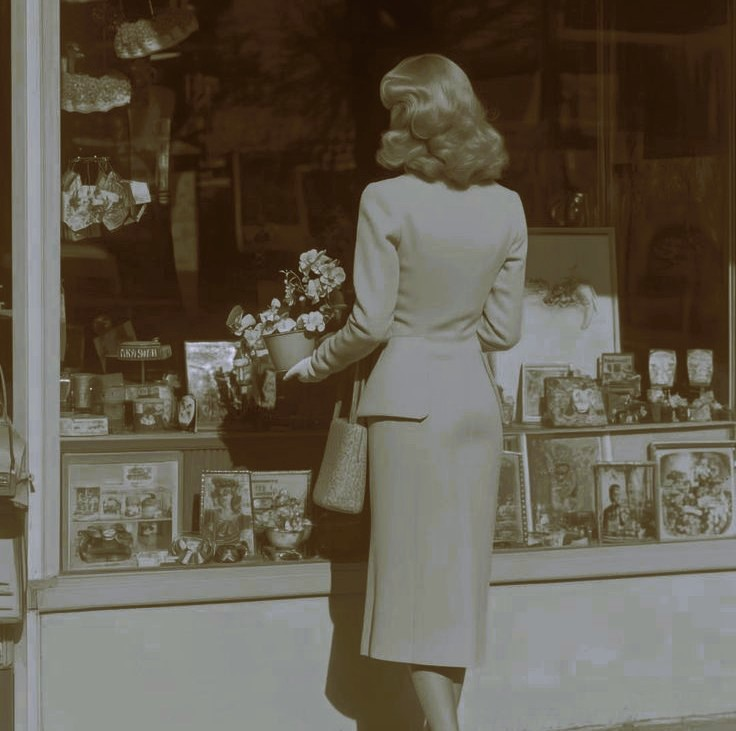

"Step into an era where time moved to the rhythm of horse-drawn carriages and flickering gaslight. The 1890s were defined by a rigid yet refined social grace, where grand Victorian traditions met the first whispers of a modern world. It was a life of velvet parlors, handwritten letters, and the quiet dignity of a world on the brink of change."


.jpg)
"The world found its heartbeat in the 1920s. Breaking free from the shadows of the past, this was the decade of jazz, speed, and stardust. Behind the doors of hidden speakeasies and beneath the glow of Art Deco skylines, life became a vibrant celebration of freedom, fashion, and the pursuit of the 'New'."


"Welcome to the era of the neon glow and the open road.The 1950s painted the world in pastel hues and chrome finishes,celebrating a newfound prosperity and the joy of the nuclear family.From the jukebox melodies of the local diner to the sleek fins of a Cadillac, it was a time when the future felt bright, polished, and full of promise."


